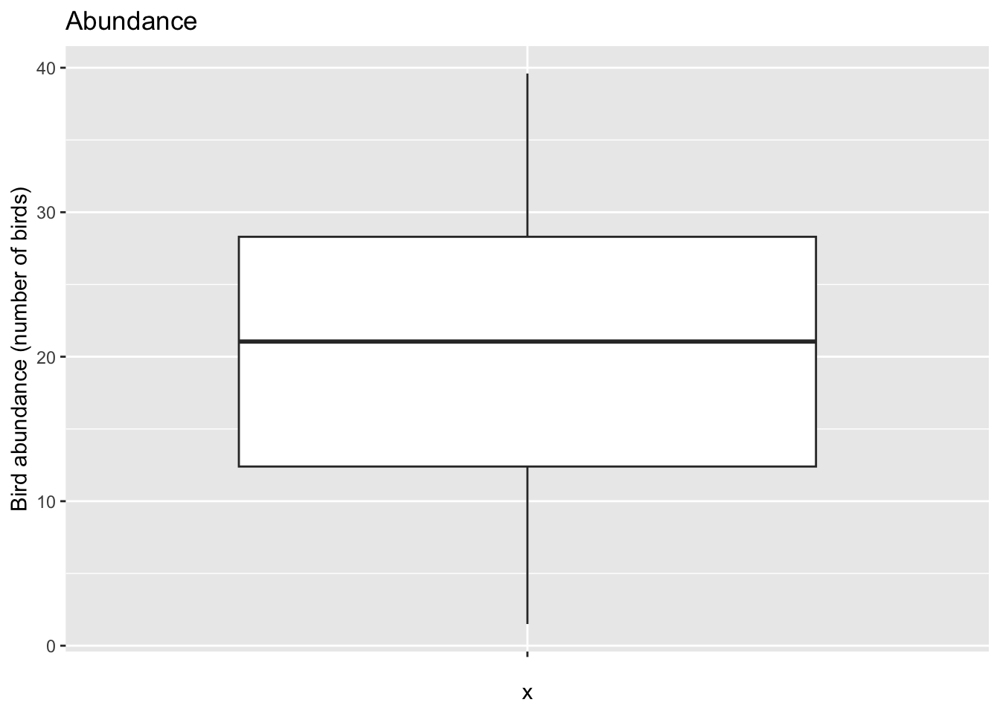
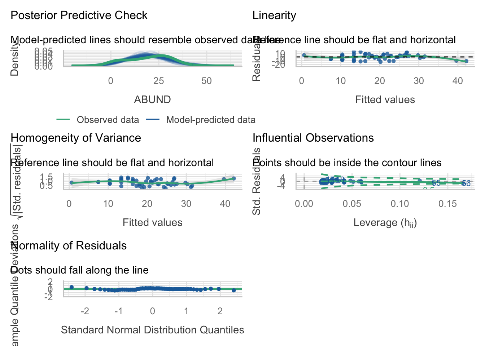
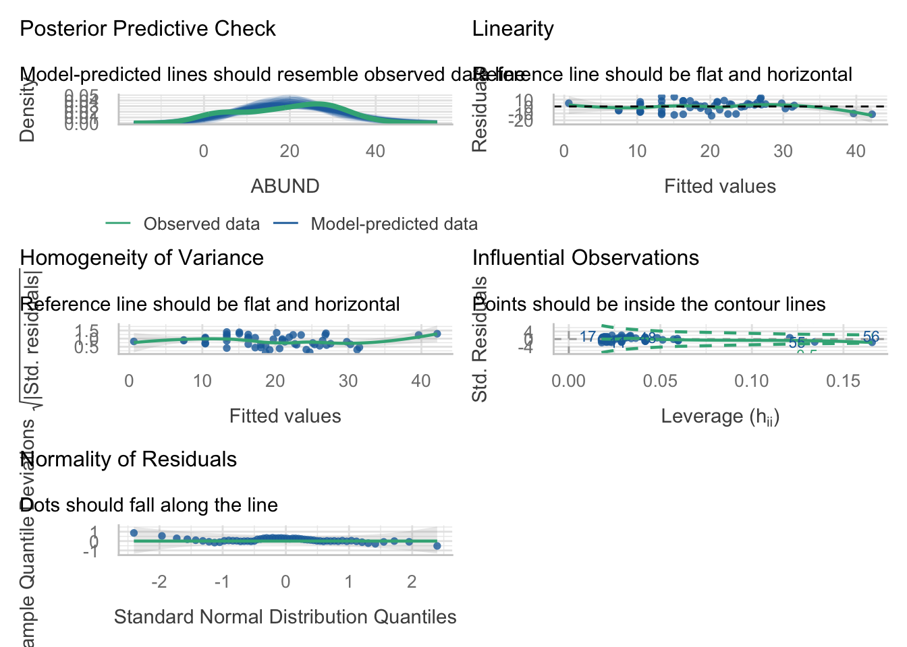
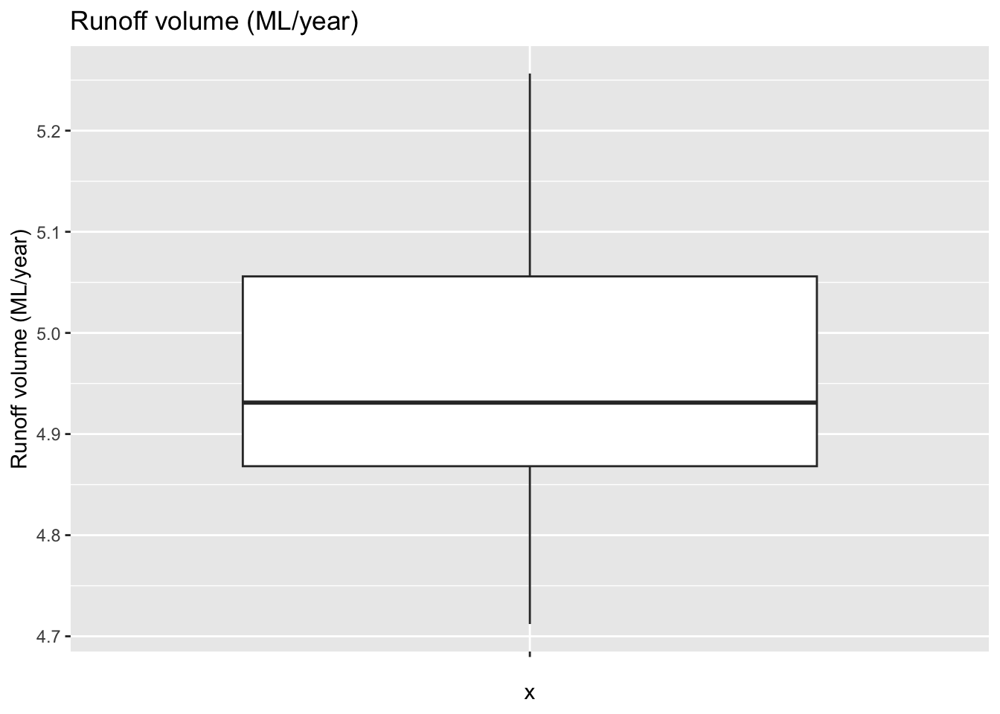
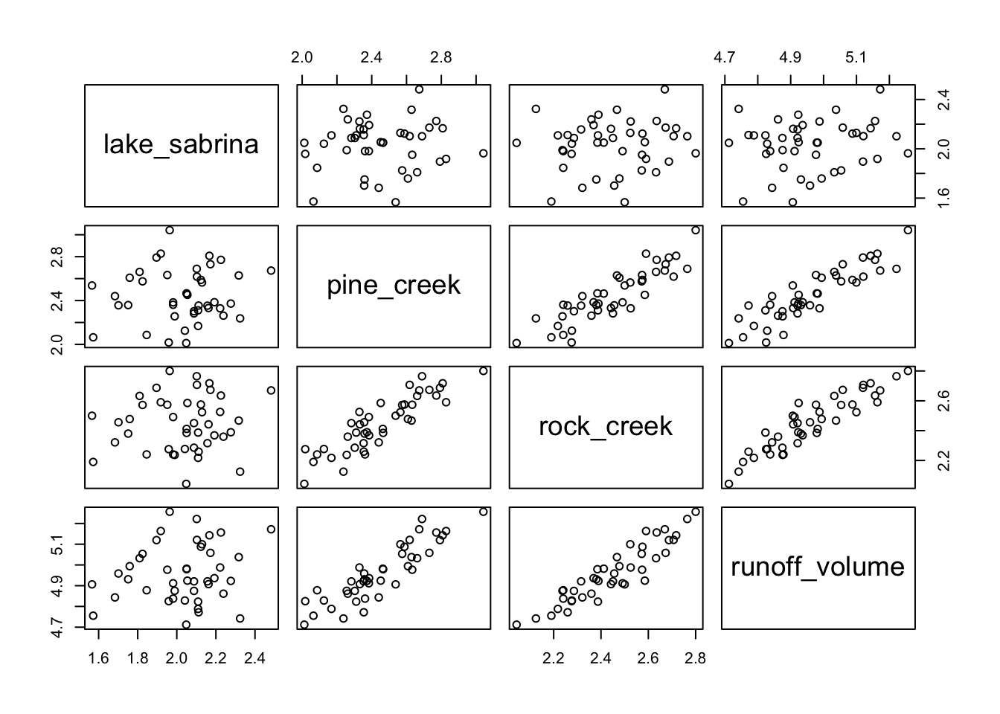
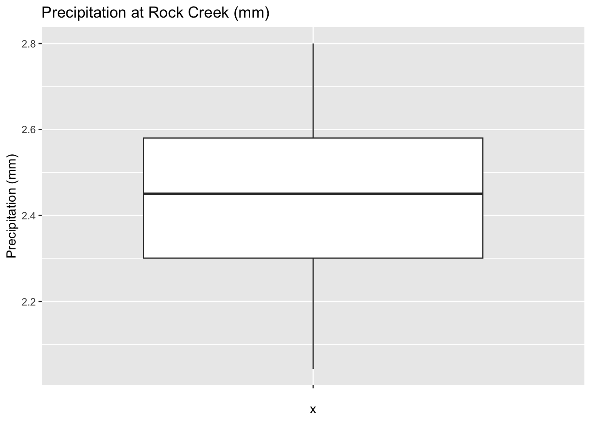

Welcome to week 7!
This week’s lab will give you some practice fitting and interpreting Simple Linear Regression (SLR) and Multiple Linear Regression (MLR) models.
This will prepare you for next week’s content where we will seek to improve our models, and then in week 9 we will use improved models for prediction.
Learning outcomes
This module links to the following unit learning outcomes:
LO3. demonstrate proficiency in the use or the statistical programming language R to apply an ANOVA and fit regression models to experimental data
LO5. interpret the output and understand conceptually how its derived of a regression, ANOVA and multivariate analysis that have been calculated by R
LO6. write statistical and modelling results as part of a scientific report
In this lab, we will learn how to:
- Fit and interpret simple linear regression (SLR) models
- Fit and interpret multiple linear regression (MLR) models
- Assess model assumptions and apply transformations when needed
- Evaluate and compare model fit statistics
Specific goals
By the end of this lab, you should be able to:
Preparation
Please work on these exercises by creating your own Quarto file. You are welcome to write your responses up in the style of a report.
Packages
This lab uses tidyverse, readxl, moments, psych, and performance. Install any you are missing by running the following in the console:
If a package is already installed, R will simply reinstall it — no harm done.
Comparing diagnostic plots
This package is really good for checking your models. For this lab, we will focus on the check_model() function from the performance package, which produces diagnostic plots that are easier to read than the base R plot() output. Compare the two approaches below to see why we recommend it:
Downloads
| File | Used in | Download |
|---|---|---|
Loyn_SLR.xlsx |
Exercise 1 | Download |
california_streamflow.xlsx |
Exercise 2 | Download |
1. Simple linear regression (~30 min)
Simple linear regression is a statistical method that allows us to investigate the relationship between two continuous variables. It is a powerful tool for understanding how one variable (the predictor) influences another variable (the response). Often a simple linear regression is the most appropriate model, so it is worth understanding.
Key points to follow:
- State the model and hypotheses
- Conduct exploratory data analysis (EDA) to understand the data and relationships between variables. This includes correlation analysis and scatterplots.
- Fit the model
- Check the assumptions of the model and apply transformations if needed
- Interpret the model parameters and fit statistics
Good luck!
Analysis for bird abundance and area of forest patch

Habitat fragmentation resulting from agriculture and urbanisation has increased the rate of wildlife population decline in Australia. You are a consultant and have been asked to investigate the influence of forest fragment size upon bird abundance. You have been provided with a dataset containing measurements of bird abundance and patch area from 56 different forest patches in Southeastern Victoria, Australia, and you want to know if there is a relationship between these two variables.
The data is in the Loyn_SLR.xlsx file.
Variables are as follows:
- ABUND: Bird abundance within each forest patch (number of birds)
- AREA: Area of each forest patch (ha)
Original data source: Loyn, R. H. (1987). Effects of patch area and habitat on bird abundances, species numbers, and tree health in fragmented Victorian forests. In Nature Conservation: the role of remnants of native vegetation eds. D.S. Saunders, G.W. Arnold, A.A. Burbridge, &A.J.M. Hopkins, pp. 65-77. Surrey Beatty and Sons.
Exercise 1
(i) Write out the statistical model for a simple linear regression and define it in terms of influence of forest patch area upon bird abundance. You can write it out in words and/or in mathematical notation.
(ii) State the hypotheses you will be testing for the relationship between bird abundance and patch area.
Remember: Null hypothesis = no change, no slope, therefore no relationship.
(iii) Conduct some exploratory data analysis upon your two variables. Describe the spread and central tendency of each, supported by values (summary statistics) and plots.
(iv) Investigate the relationship between bird abundance and patch area. Describe the relationship, supported by values (correlation coefficient) and plots.
(v) Fit a simple linear regression model to the data, with bird abundance as the response variable and patch area as the predictor variable.
(vi) Check the assumptions of your model. Do you need to transform any variables?
Hint 1: you can use the the check_model() function from the performance package to check the assumptions of your model.
Hint 2: If you do choose to transform a variable you will need to refit the model and check the assumptions again.
(vii) Provide a plot of your model and interpret the model parameters and fit statistics. Recall the key information we draw from the output; what do these statistics tell you about the relationship between bird abundance and patch area?
(viii) Write a concluding statement on your findings.
Hint: Consider the initial aim and hypothesis of the study and write it in a way that is easily understood by your client.
Solution
(i) Write out the statistical model for a simple linear regression and define it in terms of influence of forest fragment size upon bird abundance.
The statistical model for a simple linear regression is:
y_{i} = \beta_0 + \beta_1x_i + \epsilon_{i}
Where:
- y_{i} is the response variable (abundance) for the ith observation when the predictor X = x_i (area of the patch)
- \beta_0 is the intercept where the regression line crosses the y-axis (the expected abundance when patch area is 0)
- \beta_1 is the slope of the regression line, which represents the change in abundance for a one-unit increase in patch area
- \epsilon_{i} is the random error term for the ith observation and is assumed to be normally distributed with mean 0 and constant variance
OR if written in terms of the variables in our dataset, the model would be:
Abundance = \beta_0 + \beta_1Area + \epsilon_{i}
(ii) State the hypotheses you will be testing for the relationship between bird abundance and patch area.
Remember: Null hypothesis = no change, no slope, therefore no relationship.
The hypotheses for the relationship between bird abundance and patch area are:
H_0 : \beta_1 = 0 H_0 : \beta_1 \neq 0 Where \beta_1 is the slope of the regression line and represents the change in abundance for a one-unit increase in patch area.
(iii) Read in the dataset and conduct some exploratory data analysis upon your two variables. Describe the spread and central tendency of each, supported by values (summary statistics) and plots.
Read in the data
Rows: 56
Columns: 2
$ ABUND <dbl> 5.3, 2.0, 1.5, 17.1, 13.8, 14.1, 3.8, 2.2, 3.3, 3.0, 27.6, 1.8, …
$ AREA <dbl> 0.1, 0.5, 0.5, 1.0, 1.0, 1.0, 1.0, 1.0, 1.0, 1.0, 2.0, 2.0, 2.0,…We can see there are two variables, with 56 observations each. and both are numeric (coded as ‘dbl’ here, which is a type of numeric/continuous variable).
Summary statistics
I have calculated each summary statistic separately here to produce the output as a table. If you are exploring the data for yourself, you are welcome to use summary() function.
library(moments) # gives us the skewness() function
Abundance = c(
mean = mean(loyn$ABUND),
median = median(loyn$ABUND),
min = min(loyn$ABUND),
max = max(loyn$ABUND),
sd = sd(loyn$ABUND),
skewness = skewness(loyn$ABUND)
)
Area = c(
mean = mean(loyn$AREA),
median = median(loyn$AREA),
min = min(loyn$AREA),
max = max(loyn$AREA),
sd = sd(loyn$AREA),
skewness = skewness(loyn$AREA)
)
summary_loyn = rbind(Abundance, Area) |> round(1)
kable(summary_loyn, caption = "Table 1. Summary statistics for bird abundance and area of forest patches")| mean | median | min | max | sd | skewness | |
|---|---|---|---|---|---|---|
| Abundance | 19.5 | 21.0 | 1.5 | 39.6 | 10.7 | -0.3 |
| Area | 69.3 | 7.5 | 0.1 | 1771.0 | 266.1 | 5.5 |
- Bird Abundance (aka number of birds counted)
The mean bird abundance in forest patches is 19.5 and the median is 21.0 (Table 1). These are quite similar, suggesting a normal distribution. This is further supported by the skewness coefficient of -0.28, which is close to 0, and the relatively symmetrical boxplot (Fig. 1), indicating a fairly symmetric distribution.
Bird abundance ranges from a minimum of 1.5 to 39.6 birds and the standard deviation is 10.73, which indicates that there is quite a bit of variability in bird abundance across the patches. This is also evident in the wider interquartile range visible in the boxplot (fig. 1).

- Area of forest patches (in hectares, ha)
The mean area is 69.3 ha (Table 1), which is very different to the median of 7.5 ha, suggesting a highly skewed distribution. This is further supported by the skewness coefficient of 5.5.
We can also see this high amount of variability in the standard deviation of 266.1, and the area ranging from 0.1 ha to 1771 ha. The skewness and high amount of variation is most likely a result of two outliers present, visible in the boxplot (Fig. 2).
(iv) Investigate the relationship between bird abundance and patch area. Describe the relationship, supported by values (correlation coefficient) and plots.
Calculate the correlation coefficient
[1] 0.26Generate a scatter plot

The correlation coefficient is 0.26, which indicates a weak positive relationship between patch area and bird abundance.
This is evident in the scatterplot (Fig. 3) where the relationship is not very clear, as most of the points clustered towards one side of the plot. This tells us that there is a high amount of variation in bird abundance for small patch areas, and mostly smaller areas of forest with two larger areas >500 ha.
(v) Fit a simple linear regression model to the data, with bird abundance as the response variable and patch area as the predictor variable.
(vi) Check the assumptions of your model. Do you need to transform any variables?
HINT: If you do choose to transform a variable you will need to refit the model and check the assumptions again.
Use the check_model() function to check the assumptions of the model. You can also use plot(loyn_lm) to check the assumptions, but check_model() gives you a prettier output.
Linearity: Line doesn’t follow the dashed line, indicating relationship may not be linear.
Independence: No clear pattern in the residuals vs fitted plot, suggesting that the residuals are independent.
Normality of residuals: Most points follow the line, but there are some deviations at the tails, suggesting that the residuals may not be perfectly normally distributed.
Equal variance: The reference line in the plot is not straight, and there is a funnel shape in the plot, suggesting that the variance of the residuals is not constant (heteroscedasticity).
Influential observations: Hard to see, but there is a point lying outside the dashed lines, which suggests that there may be an influential observation in the data.
Decision: Usually we would transform the response variable first if the assumptions are not met, but we know the Area variable is highly skewed, so it is worth transforming the Area variable to see if this improves the model fit.
Transform Area and refit

The assumptions of the model with the log10 transformed Area variable are much better. The relationship looks more linear, the residuals are more normally distributed, and there is less evidence of heteroscedasticity.
(vii) Provide a plot of your model and interpret the model parameters and fit statistics. Interpret the model parameters and fit statistics. Recall the key information we draw from the output; what do these statistics tell you about the relationship between bird abundance and patch area?
Plot model to provide a visual of the relationship between bird abundance and patch area, with the fitted regression line.
`geom_smooth()` using formula = 'y ~ x'
Get the model summary of your final model (with the transformed variable)
Call:
lm(formula = ABUND ~ log10_AREA, data = loyn)
Residuals:
Min 1Q Median 3Q Max
-13.380 -6.119 1.372 4.631 14.255
Coefficients:
Estimate Std. Error t value Pr(>|t|)
(Intercept) 10.401 1.489 6.984 4.38e-09 ***
log10_AREA 9.778 1.209 8.086 7.18e-11 ***
---
Signif. codes: 0 '***' 0.001 '**' 0.01 '*' 0.05 '.' 0.1 ' ' 1
Residual standard error: 7.286 on 54 degrees of freedom
Multiple R-squared: 0.5477, Adjusted R-squared: 0.5393
F-statistic: 65.38 on 1 and 54 DF, p-value: 7.178e-11- State the model equation
Model equation is Abundance = 10.401 + 9.778 log10(Area)
- Interpretation of regression coefficients
For every 1 unit change in log10(Area), we expect a 9.778 increase in bird abundance.
- P-value
The P-value for the slope coefficient is < 0.001, meaning we reject our null hypothesis that the slope is equal to zero (H0: \beta_1 \neq 0) and conclude that log10(Area) is a significant predictor of bird abundance.
This is also supported by Figure 4, where the model is sloped, indicating there is a relationship between the two variables.
- R-squared
As we only have one predictor in the model, we can use the r2 value rather than the adjusted r2.
The r2 value is 0.55, which means that 55% of the variation in bird abundance can be explained by log10(Area). This is not really a strong r2 value, so it suggests that there are other factors influencing bird abundance that are not included in the model.
We can see this in Figure 4 where the points do not follow the regression line too closely. If the r2 were higher, then we would expect the points to sit closer to the line.
(viii) Write a concluding statement on your findings.
Hint: Consider the initial aim and hypothesis of the study and write it in a way that is easily understood by your client.
Recall that our original aim was to investigate the influence of forest fragment size upon bird abundance. Therefore we would say something like:
We fitted a linear model (estimated using OLS) to investigate the relationship between bird abundance and forest fragment size (area) upon bird abundance (equation: abundance = \beta_0 + \beta_1 \cdot area).
The model explains a statistically significant and moderate proportion of variance (R2 = 0.55, F(1, 54) = 65.38, p < .001). Within this model, the effect of forest patch area is statistically significant and positive (\beta_1 = 9.778, t(54) = 8.086, p < .001).
Before moving on to the next section, take a short break and stretch your legs.
2. Multiple linear regression (~30 min)
Multiple linear regression has a slightly different approach compared to simple linear regression. We are still fitting a linear model and you will notice the process is similar, but we are incorporating more than one predictor variable into the model, which brings some additional steps.
More hypotheses: rather than a single null and alternate hypothesis, you will also need to consider the hypotheses for each predictor variable, as well as the overall model.
More EDA: Rather than exploring only two variables, you will need to explore the additional variables. You will also need to explore the relationships between the predictor variables (signs of collinearity).
More assumptions: in addition to the assumptions of linearity, independence, normality of residuals, and equal variance, we also need to consider the assumption of no collinearity between predictor variables as this can trick us into thinking our model is better than it actually is (we will explore this more in next week’s lecture).
More interpretation: rather than only interpreting one regression coefficient, you will now have to assess a number of partial regression coefficients and their significance. You will also need to consider the overall model fit, and whether the model is a good fit for the data.
You will need to use the adjusted r2 value rather than the r2 value to assess the fit of the model, as r2 will always increase with the addition of more predictor variables, even if those variables do not actually improve the model fit. We will explain this more next week.
Analysis for runoff and precipitation in Bishop, California
You are a hydrologist tasked with analysing legacy data to investigate the relationship between precipitation at three sites (Lake Sabrina, Pine Creek, and Rock Creek) and stream runoff volume at a site near Bishop, California. The dataset contains 43 years of annual precipitation measurements (in mm) taken at (originally) 6 sites in the Owens Valley in California. You will focus on only 3 variables.
The data is in the california_streamflow.xlsx file.
Variables are as follows:
lake_sabrina: Precipitation recorded at Lake Sabrina (mm)pine_creek: Precipitation recorded at Big Pine Creek (mm),rock_creek: Precipitation recorded at Rock Creek (mm)runoff_volume: Stream runoff volume measured at a site near Bishop, California (ML/year). This will be the response variable.
Note the variables have already been log-transformed to increase normality of the residuals in the regressions.
Data source: Hollett, K.J., Danskin, F.M., McCaffrey, W.F., and Walti, S.L., 1991. Geology and water resources of Owens Valley, California. U.S. Geological Survey Water-Supply Paper 2370-H.
This week we will focus on getting the model running and practice interpretation of the output. Next week we will focus on working out the most suitable model.
Exercise 2
(i) Write out the statistical model for a multiple linear regression and define it in terms of the data (precipitation at each site vs runoff volume at Bishop).
You can write it out in words and/or in mathematical notation.
(ii) State the hypotheses you will be testing for the relationship between each site and runoff volume.
(iii) Read in the data and conduct some exploratory data analysis upon your variables. Describe the spread and central tendency of each, supported by values (summary statistics) and plots.
(iv) Investigate the relationship between each of your variables. Describe the relationship, supported by values (correlation coefficient) and plots.
Hint: we are not only looking at relationship between response and predictors here, but also the relationships between predictor variables (signs of collinearity).
(v) Fit a multiple linear regression model to the data, with runoff_volume as the response variable and lake_sabrina, pine_creek and rock_creek as the predictor variables.
(vi) Check the assumptions of your model. Do you need to transform any variables?
Hint 1: you can use the the check_model() function from the performance package to check the assumptions of your model.
Hint 2: You may notice some collinearity occurring between predictors. This week you only need to acknowledge it and then you can move onto interpretation. Next week we will look at how to deal with collinearity in models.
(vii) Interpret the model parameters and fit statistics. Recall the key information we draw from the output; what do these statistics tell you about the relationship between precipitation at each site and runoff volume at Bishop, California?
(viii) Write a concluding statement on your findings.
Hint: Consider the initial aim and hypothesis of the study and write it in a way that is easily understood by your client.
Solution
(i) Write out the statistical model for a multiple linear regression and define it in terms of the data (precipitation at each site vs runoff volume at Bishop).
You can write it out in words and/or in mathematical notation.
The statistical model for a multiple linear regression with 3 predictors is:
y_{i} = \beta_0 + \beta_1x_1 + \beta_2x_2 + \beta_3x_3 + \epsilon_{i}
Where:
- y_{i} is the response variable (runoff volume) for the ith observation when the predictor X = x_i (precipitation at a site)
- \beta_0 is the intercept where the regression line crosses the y-axis
- \beta_1 is the slope of the regression line for the first predictor, which represents the change in runoff volume for a one-unit increase in precipitation at lake_sabrina
- \beta_2 is the slope of the regression line for the first predictor, which represents the change in runoff volume for a one-unit increase in precipitation at pine_creek
- \beta_3 is the slope of the regression line for the first predictor, which represents the change in runoff volume for a one-unit increase in precipitation at rock_creek
- \epsilon_{i} is the random error term for the ith observation and is assumed to be normally distributed with mean 0 and constant variance
OR if written in terms of the variables in our dataset, the model would be:
\textrm{Runoff volume} = \beta_0 + \beta_1\cdot \textrm{lake_sabrina} + \beta_2\cdot \textrm{pine_creek} + \beta_3\cdot \textrm{rock_creek} + \epsilon_{i}
(ii) State the hypotheses you will be testing for the relationship between each site and runoff volume.
In multiple linear regression we are testing multiple hypotheses (one per predictor + one for the overall model).
Therefore:
- Relationship between precipitation at lake_sabrina and runoff volume: H_0 : \beta_1 = 0 H_1 : \beta_1 \neq 0
- Precipitation at pine_creek and runoff volume: H_0 : \beta_2 = 0 H_1 : \beta_2 \neq 0
- Precipitation at rock_creek and runoff volume:
H_0 : \beta_3 = 0 H_1 : \beta_3 \neq 0 4. Overal model:
H_0 : \beta_1 = \beta_2 = \beta_3 = 0 H_1 : \textrm{at least one } \beta_i \neq 0
(iii) Read in the data and conduct some exploratory data analysis upon your variables. Describe the spread and central tendency of each, supported by values (summary statistics) and plots.
Read in the data
Rows: 43
Columns: 4
$ lake_sabrina <dbl> 1.958717, 2.087881, 1.981175, 2.054169, 2.102934, 2.1568…
$ pine_creek <dbl> 2.017618, 2.282781, 2.383471, 2.451719, 2.618086, 2.3532…
$ rock_creek <dbl> 2.275823, 2.450548, 2.491194, 2.585246, 2.706948, 2.3159…
$ runoff_volume <dbl> 4.825412, 4.920867, 4.911735, 4.924242, 5.120841, 4.9210…We can see there are four variables, with 43 observations each. All variables are numeric (coded as ‘dbl’ here, which is a type of numeric/continuous variable).
Summary statistics
I have calculated each summary statistic separately here to produce the output as a table. If you are exploring the data for yourself, you are welcome to use summary() function.
library(moments) # gives us the skewness() function
runoff_volume = c(
mean = mean(stream_data$runoff_volume),
median = median(stream_data$runoff_volume),
min = min(stream_data$runoff_volume),
max = max(stream_data$runoff_volume),
sd = sd(stream_data$runoff_volume),
skewness = skewness(stream_data$runoff_volume)
)
lake_sabrina = c(
mean = mean(stream_data$lake_sabrina),
median = median(stream_data$lake_sabrina),
min = min(stream_data$lake_sabrina),
max = max(stream_data$lake_sabrina),
sd = sd(stream_data$lake_sabrina),
skewness = skewness(stream_data$lake_sabrina)
)
pine_creek = c(
mean = mean(stream_data$pine_creek),
median = median(stream_data$pine_creek),
min = min(stream_data$pine_creek),
max = max(stream_data$pine_creek),
sd = sd(stream_data$pine_creek),
skewness = skewness(stream_data$pine_creek)
)
rock_creek = c(
mean = mean(stream_data$rock_creek),
median = median(stream_data$rock_creek),
min = min(stream_data$rock_creek),
max = max(stream_data$rock_creek),
sd = sd(stream_data$rock_creek),
skewness = skewness(stream_data$rock_creek)
)
summary_creeks = rbind(runoff_volume, lake_sabrina, pine_creek, rock_creek) |> round(2)
kable(summary_creeks, caption = "Table 2. Summary statistics for runoff volume (ML/year) and precipitation at Lake Sabrina, Pine Creek, and Rock Creek (mm)")| mean | median | min | max | sd | skewness | |
|---|---|---|---|---|---|---|
| runoff_volume | 4.96 | 4.93 | 4.71 | 5.26 | 0.14 | 0.29 |
| lake_sabrina | 2.03 | 2.05 | 1.57 | 2.48 | 0.20 | -0.44 |
| pine_creek | 2.45 | 2.38 | 2.01 | 3.04 | 0.24 | 0.19 |
| rock_creek | 2.45 | 2.45 | 2.04 | 2.80 | 0.18 | -0.03 |
- Runoff volume (ML/year)
The mean runoff volume recorded at the site near Bishop, California is 4.96 ML/year and the median is 4.93 ML/year (Table 2). These are quite similar, suggesting a normal distribution. This is further supported by the skewness coefficient of 0.29, which is close to 0, and the relatively symmetrical boxplot (Fig. 5), indicating a fairly symmetric distribution. The median does seem to sit closer to the first quartile than the third quartile, suggesting a slight skew, but everything else seems to indicate a fairly normal distribution.
Runoff volume ranges from a minimum of 4.71 ML/year to 5.26 ML/year and the standard deviation is 0.14, which indicates that the spread of values is quite small.

- Precipitation at Lake Sabrina (mm)
The mean precipitation recorded at Lake Sabrina is 2.03 mm and the median is 2.05 mm (Table 2). These are quite similar, but given the narrow range of values the difference could be quite large. We can see this in the skewness coefficient of -0.44, which suggests the distribution is symmetrical, but there is a slight skew to the left. Upon visual inspection of the boxplot (Fig. 6) we can see there are a number of outliers which may be influencing this skew.
Precipitation at Lake Sabrina ranged from a minimum of 1.6 mm to 2.5 mm and the standard deviation is 0.20, indicating that there is some variability in precipitation at Lake Sabrina across the years.

- Precipitation at Pine Creek (mm)
The mean precipitation at Pine Creek was 2.45 mm and the median was 2.38 mm. The mean and median are similar and the skewness coefficient of 0.19 suggests the distribution is symmetrical. Upon visual inspection of the boxplot (Fig. 7) we can see the median lies closer to the first quartile, but otherwise the boxplot looks fairly symmetrical.
Precipitation at Pine Creek ranged from a minimum of 2.01 mm to a maximum of 3.04 mm and the standard deviation is 0.24, indicating that there is some variability in precipitation at Pine Creek across the years.

- Precipitation at Rock Creek (mm)
The mean precipitation at Rock Creek was the same as the median (2.45 mm), and the skewness coefficient of -0.03 suggests the distribution is very symmetrical. Upon visual inspection of the boxplot (Fig. 8) we can see the median lies exactly in the middle of the box, and there are no outliers, suggesting a very symmetrical distribution.
Precipitation ranged from 2.04 mm to 2.80 mm and the standard deviation is 0.18, indicating that there was a small amount of variability in precipitation at Rock Creek across the years.

(iv) Investigate the relationship between each of your variables. Describe the relationship, supported by values (correlation coefficient) and plots.
Hint: we are not only looking at relationship between response and predictors here, but also the relationships between predictor variables (signs of collinearity).
It is good to have a numeric value (correlation coefficient) and a visual (scatterplot) to investigate the relationship between each of the variables.
You can do this separately using cor() and pairs(), or you can use the pairs.panels() function from the psych package to get both the correlation coefficients and the scatterplots in one go.
- separately
Correlation coefficient
lake_sabrina pine_creek rock_creek runoff_volume
lake_sabrina 1.00000000 0.07848517 0.09054996 0.1649284
pine_creek 0.07848517 1.00000000 0.88381452 0.8929251
rock_creek 0.09054996 0.88381452 1.00000000 0.9194688
runoff_volume 0.16492838 0.89292511 0.91946880 1.0000000Pairs plot

- All in one
Interpretation
Stream runoff volume is highly correlated with rock_creek (r = 0.92) and with pine_creek (r = 0.88), but weakly correlated with lake_sabrina (r = 0.16). This is also evident in the scatterplots betweeen runoff_volume and rock_creek, and runoff_volume and pine_creek, which show a clear positive relationship, while the scatterplot between runoff_volume and lake_sabrina shows points scattered about the plot, indicating no clear relationship.
We can also see a strong correlation between pine_creek and rock_creek (r = 0.88), which may indicate collinearity between these two predictor variables. This is also evident in the scatterplot between pine_creek and rock_creek, which shows a clear positive relationship.
Lake Sabrina does not appear to be correlated with pine_creek or rock_creek (r = 0.08 and 0.09, respectively), which is also evident in the scatterplots which show points scattered about the plot rather than following a clear trend.
(v) Fit a multiple linear regression model to the data, with runoff_volume as the response variable and lake_sabrina, pine_creek and rock_creek as the predictor variables.
Call:
lm(formula = runoff_volume ~ ., data = stream_data)
Residuals:
Min 1Q Median 3Q Max
-0.09885 -0.03331 0.01025 0.03359 0.09495
Coefficients:
Estimate Std. Error t value Pr(>|t|)
(Intercept) 3.25716 0.12360 26.352 < 2e-16 ***
lake_sabrina 0.05631 0.03756 1.499 0.14185
pine_creek 0.21085 0.06756 3.121 0.00339 **
rock_creek 0.43838 0.08798 4.983 1.32e-05 ***
---
Signif. codes: 0 '***' 0.001 '**' 0.01 '*' 0.05 '.' 0.1 ' ' 1
Residual standard error: 0.04861 on 39 degrees of freedom
Multiple R-squared: 0.8817, Adjusted R-squared: 0.8726
F-statistic: 96.88 on 3 and 39 DF, p-value: < 2.2e-16(vi) Check the assumptions of your model. Do you need to transform any variables?
Hint 1: you can use the the check_model() function from the performance package to check the assumptions of your model.
Hint 2: You may notice some collinearity occurring between predictors. This week you only need to acknowledge it and then you can move onto interpretation. Next week we will look at how to deal with collinearity in models.
Linearity: Line mostly follows the dashed line, so we can say the relationship is mostly linear. There are some deviations at the tails, suggesting that the relationship may not be perfectly linear (is there a better model for this relationship?).
Independence: No clear pattern in the residuals vs fitted plot, suggesting that the residuals are independent.
Normality of residuals: Most points follow the line, but there are some deviations at the tails, suggesting that the residuals may not be perfectly normally distributed.
Equal variance: The reference line in the plot relatively straight, suggesting that the variance of the residuals is constant.
Influential observations: No points lying outside the contour lines, which suggests that there are no influential observations in the data.
Collinearity: This is an additional assumption for Multiple Linear Regression. We can check for collinearity by looking at the correlation matrix (which we have already done) and by looking at the Variance Inflation Factor (VIF) values. VIF values greater than 5 or 10 indicate a potential problem with collinearity.
Decision: No transformations needed BUT we are seeing an issue with collinearity.
We will explore collinearity and VIF more in next week’s lecture as it will help us fit a more appropriate model.
For now we can continue with this model and explore the output, keeping in mind that is is not perfect. We will explore how to deal with collinearity in next week’s lecture.
(vii) Interpret the model parameters and fit statistics. Recall the key information we draw from the output; what do these statistics tell you about the relationship between precipitation at each site and runoff volume at Bishop, California?
Call:
lm(formula = runoff_volume ~ ., data = stream_data)
Residuals:
Min 1Q Median 3Q Max
-0.09885 -0.03331 0.01025 0.03359 0.09495
Coefficients:
Estimate Std. Error t value Pr(>|t|)
(Intercept) 3.25716 0.12360 26.352 < 2e-16 ***
lake_sabrina 0.05631 0.03756 1.499 0.14185
pine_creek 0.21085 0.06756 3.121 0.00339 **
rock_creek 0.43838 0.08798 4.983 1.32e-05 ***
---
Signif. codes: 0 '***' 0.001 '**' 0.01 '*' 0.05 '.' 0.1 ' ' 1
Residual standard error: 0.04861 on 39 degrees of freedom
Multiple R-squared: 0.8817, Adjusted R-squared: 0.8726
F-statistic: 96.88 on 3 and 39 DF, p-value: < 2.2e-16- State the model equation Model equation is:
$ = 3.257 + 0.05631 + 0.210 + 0.438 $
- Interpretation of regression coefficients
Holding all other variables constant: (very important to include this)
For every 1 unit change in precipitation at lake_sabrina, we expect a 0.056 increase in runoff_volume;
For every 1 unit change in precipitation at pine_creek, we expect a 0.210 increase in runoff_volume;
For every 1 unit change in precipitation at rock_creek, we expect a 0.438 increase in runoff_volume.
- P-value
When assessing the p-values, we must consider the p-value associated with each partial regression coefficient, as well as the overall model.
- Relationship between precipitation at lake_sabrina and runoff volume:
The P-value for the partial regression coefficient is > 0.001, meaning we FAIL TO reject our null hypothesis that the slope is equal to zero (H0: \beta_1 = 0) and conclude that precipitation at Lake Sabrina is NOT a significant predictor of runoff volume at the site near Bishop, California.
- Precipitation at pine_creek and runoff volume:
The P-value for the partial regression coefficient is < 0.05, meaning we reject our null hypothesis that the slope is equal to zero (H0: \beta_2 = 0) and conclude that precipitation at Pine Creek is a significant predictor of runoff volume at the site near Bishop, California.
- Precipitation at rock_creek and runoff volume:
The P-value for the partial regression coefficient is < 0.05, meaning we reject our null hypothesis that the slope is equal to zero (H0: \beta_3 = 0) and conclude that precipitation at Rock Creek is a significant predictor of runoff volume at the site near Bishop, California.
- Overall model:
The P-value for the model is < 0.001, indicating that at least one slope is not equal to zero. This means we reject our null hypothesis that the all partial slopes are equal to zero (H_0 : \beta_1 = \beta_2 = \beta_3 = 0) and conclude that our model is significant.
- R-squared As we more than one predictor in the model, we will need to use the adjusted r2. We will cover the reason for this in next week’s lecture.
The r2 value is 0.87, which means that 87% of the variation in stream runoff volume can be explained our model. This is quite a strong r2 value, but we will need to acknowledge that more investigation is needed as the collinearity between predictors may be influencing our model.
(viii) Write a concluding statement on your findings.
Hint: Consider the initial aim and hypothesis of the study and write it in a way that is easily understood by your client.
We fitted a multiple linear regression model (estimated using OLS) to investigate the relationship between precipitation at three sites (Lake Sabrina, Pine Creek, and Rock Creek) and stream runoff volume at a site near Bishop, California (equation: \textrm{runoff_volume} = \beta_0 + \beta_1\cdot \textrm{lake_sabrina} + \beta_2\cdot \textrm{pine_creek} + \beta_3\cdot \textrm{rock_creek}).
The model explains a statistically significant and strong proportion of variance (R2 = 0.87, F(3, 39) = 96.88, p < 0.05). Within this model, the effect of precipitation at Lake Sabrina was not statistically significant (\beta_1 = 0.056, t(39) = 1.499, p > 0.05), while the effects of precipitation at Pine Creek and Rock Creek were statistically significant and positive (\beta_2 = 0.211, t(39) = 3.12, p < 0.05; \beta_3 = 0.438, t(39) = 4.98, p < 0.05).
Conclusion
Closing thoughts
You have done a great job fitting linear regression models and interpreting the output.
As you may have noticed in this lab, models are rarely perfect, so next week we will focus on working out the most suitable model for our data based on what we have.
Keep up the great work and see you in the week 8 lecture!
If you have any questions, please approach your tutors or you are welcome to post to the Ed Discussion board.
Attribution
This lab was developed using resources that are available under a Creative Commons Attribution 4.0 International license, made available on the SOLES Open Educational Resources repository.